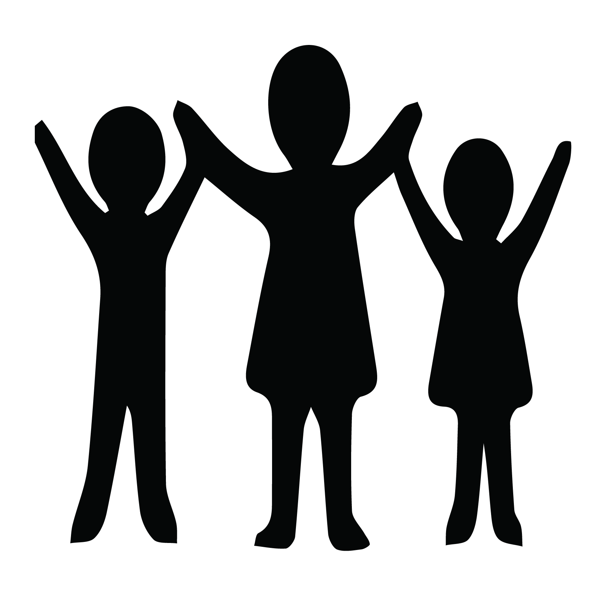
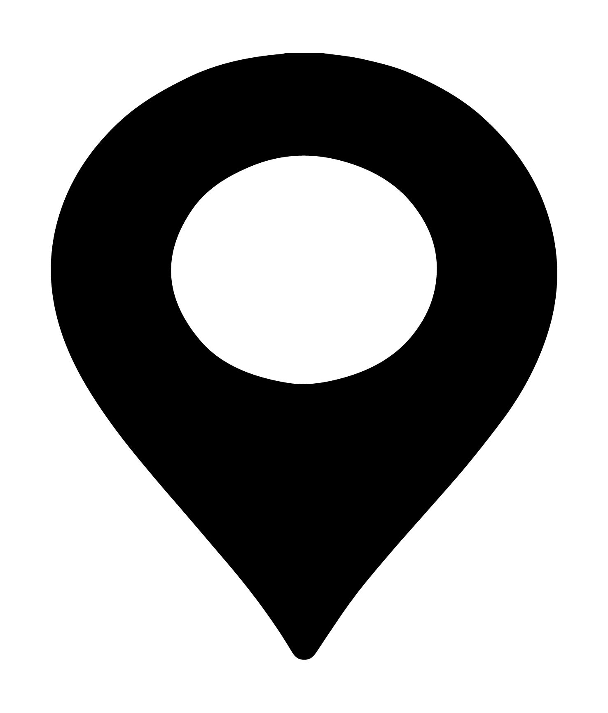

סוג פעילות:
יצירה
סוג פעילות:
יצירה
 גילאים: חטיבה ותיכון
 מרחב פעילות: סגור
 משך פעילות:
עד 20 דקות
משך פעילות:
עד 20 דקות
מטרות הפעילות:
- המשתתפים יביעו את עמדתם כלפי נושא מסוים בדרך יצירתית
- המשתתפים יביאו לידי ביטוי את הידע שלהם בנושא מסוים
- המשתתפים יחוו חוויה של יצירה משותפת
הכנה לפעילות:
עזרים:
- עיתונים ו/או מגזינים
- דפים לבנים
- דבק
הכנה מראש:
יש להניח על השולחן עיתונים/מגזינים, ודבקמהלך הפעילות:
כל משתתף בנפרד יקבל נייר לבן חלק (ניתן לעשות את אותו הדבר עם פלאקט אחד לכלל המשתתפים).
בהתאם לנושא עליו נרצה לקיים דיון, או למסר אותו נרצה להעביר, בשלב הראשון:
מבחינתם את הנושא, או מעבירות את עמדתם בנוגע אליו. לאחר מכן נבקש להדביק את גזרי העיתונים על הנייר שקיבלו, בצורה שתייצג את המסר שלהם הכי טוב.
דגשים לנגישות:
מוגבלות מוטורית
- במידה ויש משתתפים עם קושי במוטוריקה עדינה- ניתן להכין מראש גיזרי עיתון ולתת להם רק לבחור מבין גזרי העיתונים במקום לחתוך בעצמם.
- לחניכים שמתקשים להחזיק דברים קטנים, ניתן להביא עטבים, שבעזרתם יוכלו להחזיק את גזרי העיתון ולמקם אותם על הנייר.
- במיה ויש משתתפים על כיסאות גלגלים יש לוודא כי יש להם שולחן או מגש לעבוד עליו.
לקות חושית
משתתפים עם עיוורון יזדקקו לתיווך התמונות והמילים הקיימות, ניתן לשאול אותם ראשית מה היא עמדתם כלפי הנושא, לתת להם תיאורים של דברים המופיעים בעיתון ולשאול אותם מה מבין הדברים המתוארים מייצג את עמדתם בצורה הטובה ביותר. מראש נמקם על הנייר חתיכות סקוץ' זכר, ולאחר שבחרנו את גזרי העיתון נביק עליהם סקוצ' נקבה. נאפשר למשתתף למקם בכוחות עצמו את גזרי העיתון על המיקומים על הדף.
מוגבלות קוגניטיבית
חשוב לשים לב שבחירת העיתונים והמגזינים מתאימה לרמה הקוגנטיבית של המשתתפים וגילם
מוגבלות תקשורתית
- לחניכים עם מוגבלות תקשורתית ניתן להוסיף מלבד העיתונים סמלים מוסכמים כגון PCS אשר יכולים להחליף את השימוש במילים כתובות מהעיתון.
- רצוי להביא עיתונים, תמונות ומילים שכמה שיותר קשורים באופן ברור לנושא הקולאז' על מנת להקל על המשתתפים בבחירת התמונות. עודף של אפשרויות עלול לגרום לתסכול.
מוגבלות רגשית
חשוב לשים לב למה שיוצרים החניכים ולראות, האם מועברים דרך היצירות מסרים סמויים או גלויים עם תוכן שדורש התייחסות.